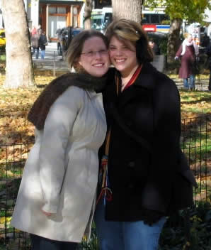

This is my buddy Mary-Kate (and her girlfriend Jess, who's on the left) She and I met during the grooviest of semesters, Spring 2003. I was dating this guy Jeff at the time, and he told me that whenever he needed a party connection, MK was his girl. So, I met Mary-Kate and she seemed really cool. I don't know why, but she seemed like a person that alot of people grab hold of, but somehow let slip away. Fortunate for me, I did not let that happen.
While my relationship with Jeff didn't last, my relationship with Mary-Kate has. Her, Jerm, and I had some fun one fateful night at Boneshakers. During my junior year, when MK became an RA for a semester in Lipscomb, we had a nice evening hanging out and talking. I really miss having her around like those days, but eventually people change and move on. Mary-Kate got a sweet place out on Pulaski, and I got to see her new digs at a very cool house-warming party. She's just so radiant, and everyone loves MK—everyone was there! We had a good time, and it was like I had my homegirl all over again (almost half as good as when we got to make out during a steamy night of spin the bottle!)

| Well, this is Jess and Mary-Kate. Jess is a wonderful girl who makes my Mary-Kate very happy, so that makes her pretty fantastic in my book! |
During my senior year, alot of really wonderful things happened for Mary-Kate. She met a very nice girl, Jessica, and she realized that her unique energies were better served elsewhere, and so she took a break. I was dealing with alot at the time, so I really couldn't give her the send off she deserved, but I hope this somehow makes up for it. I don't make Friends Pages for everyone. You have to be special, and unique, and it has to be deserved. This is something I should have done along time ago.
I love you Mary-Kate, and you will always be my friend.
I love you Mary-Kate, and you will always be my friend.

Mary-Kate is so very Special. And everyone knows this song rocks!
Special
I'm living without you
I know all about you
I have run you down into the ground
Spread disease about you over town
I used to adore you
I couldn't control you
There was nothing that I wouldn't do
To keep myself around and close to you
Do you have an opinion?
A mind of your own?
I thought you were special
I thought you should know
But I've run out of patience
I couldn't care less
I...
I...
Do you have an opinion?
A mind of your own?
I thought you were special
I thought you should know
It used to amuse you
I knew that I'd lose you
Now you're here and begging for a chance
But there's no way in hell I'd take you back
Do you have an opinion?
A mind of your own?
I thought you were special
I thought you should know
But I've run out of patience
I've run out of comments
I'm tired of the violence
I couldn't care less
I'm looking for a new
I'm looking for a new
I'm looking for a new
I'm looking for a new
We were the talk of the town
We were the talk of the town
We were the talk of the town
We were the talk of the town
I thought you were special
I thought you were special
I thought you were special
I thought you were special